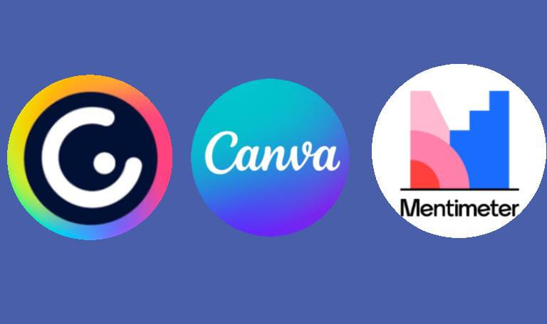

Proyecto pagina principal
Voy a hacer una página web acerca de cómo usar 3 aplicaciones, las cuales son Canva, Mentimeter y Genially.
Voy a utilizar Canva para mejorar el diseño, ya que el diseño y los detalles más pequeños son importantes y clave para crear una página web.
Voy a utilizar Mentimeter en mi página web para crear contenido interactivo y dinámico, empezando por crear una cuenta y elegir un plan que se adapte a mis necesidades.
Agregaré contenido interactivo como preguntas y respuestas, encuestas y sondeos, imágenes y videos, y gráficos y diagramas.
Personalizaré el diseño y la apariencia para que se ajuste a mi marca y estilo.
También voy a utilizar Genially para crear contenido interactivo y dinámico, empezando por crear un proyecto y elegir una plantilla que se adapte a mis necesidades.
Con Genially, podré crear presentaciones, infografías y otros tipos de contenido de manera fácil y rápida.
Espero que estas aplicaciones me ayuden a aumentar la participación y el compromiso de mis visitantes.
Podré obtener información valiosa sobre sus intereses y preferencias y mejorar mi contenido y servicios.
Mi objetivo es ofrecer una experiencia más agradable y participativa a mis visitantes
